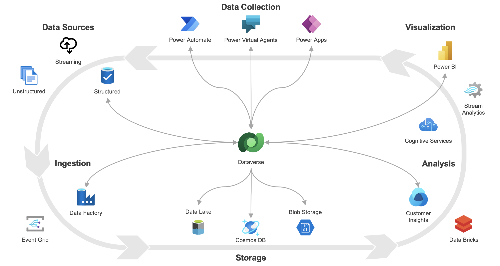

Welcome!
Hi there! My name is Madhurbain Kaur and I am a Software Engineering student at the University of Guelph. Learn more about me. On this page, I will be going over my second co-op placement at Peel District School Board as a Microsoft Cloud Technologies Specialist for 8 months. I will discuss information about PDSB, my goals in this position, and an overview of the job during the last 4 months.
About PDSB
Peel District School Board is the second largest school board in Canada. The board employs more than 16,000 full-time staff, being the largest employer in Peel Region. The Peel Board is known for its ethnic and cultural diversity and the board takes many initiatives to ensure inclusivity for all staff and students.
 Some stats about PDSB. Taken from PDSB - About Us
Some stats about PDSB. Taken from PDSB - About Us
There are 18 departments in the PDSB organizational structure including the Learning Technology Support Services (LTSS) department. Peel District School Board is the largest user for Microsoft Teams. During the past year, the board had 700,000 meetings and live events, and over 20 million chat messages via MS Teams. The LTSS department was responsible for making many changes during the pandemic to support remote work, teaching, and learning.
Work Term Goals
During the first four months of my eight-month work term, my primary goals were to learn automation using low-code solutions, enhance my training and communication skills, and gain certifications and training on MS Cloud technologies. These goals were developed to build on the skills I had worked on during my previous placement at PDSB. During that time, I recognized the potential of Power Automate to replace traditional coding for routine tasks, highlighting the need for proficiency in low-code solutions.
This term, I aimed to learn low-code automation to streamline workflows and increase productivity, which would be highly beneficial in any future technical roles. I have gained a much better understanding of Power Automate through my coworkers, tutorials, and hands-on experience.

Enhancing my training and communication skills was crucial because I wanted to improve my ability to convey information and teach others—an area where I had struggled. This role provided numerous opportunities to develop this skill. I developed detailed tutorials and documentation for staff on using various cloud technologies, which were well-received and widely used. Additionally, I held office hours to assist with any questions related to Office 365 tools.
Working with MS Cloud technologies was particularly important due to their widespread use and relevance in modern IT environments. Gaining certifications would not only validate my skills but also prepare me for more advanced roles in the future. I have completed some online training but have yet to obtain certifications. I aim to focus more on this during the next four months. Reflecting on my goals, I successfully enhanced my training and communication skills, making significant strides in delivering effective training sessions and improving team collaboration. I also made good progress in learning low-code automation, though I recognize there's more to explore. Unfortunately, I was not able to complete all desired certifications in MS Cloud technologies due to time constraints and workload, but I plan to pursue these certifications independently to continue my professional growth.
Job Description

During my eight-month work term at PDSB, my job centered on using technology to improve communication and productivity within the Board. One of the main projects I worked on was using Power Automate to send automatic emails and issue certifications after employees completed professional development courses on SharePoint. This project demonstrated how low-code platforms could replace traditional coding in some cases, making workflows smoother and more efficient. Additionally, my team worked on creating Power BI reports on mock EQAO tests of thousands of students that completed the tests. This project provided valuable insights into student performance and helped identify areas for improvement for teachers, principals, and superintendents.
The most interesting part of my job was getting hands-on experience with Power Automate. Before this work term, I had no knowledge of Power Automate, but learning this skill on the job revealed its range of possibilities and applications. By working closely with my coworkers, following tutorials, and applying what I learned in practical scenarios, I gained a much deeper understanding of how to implement automation solutions.
Additionally, creating detailed tutorials and documentation for staff on various cloud technologies was particularly rewarding as I was able to assist educators in enhancing their proficiency with technology.
The job required a solid understanding of MS Cloud technologies, strong communication abilities, and problem-solving abilities. While I had some foundational knowledge from my coursework, most of my learning happened on the job. Collaborating with coworkers, participating in training sessions, and solving real-world problems provided invaluable practical experience that cannot be gained in the classroom. Overall, this work term was a mix of applying classroom knowledge and learning new skills on the job. It allowed me to develop both technical and soft skills, preparing me for more advanced roles in the future.
Acknowledgments

I am absolutely thrilled to have the opportunity to return to Rachel Marshall's team. Rachel's exceptional leadership and mentorship greatly impacted my professional growth during my previous placement, and I am genuinely excited to continue learning and contributing under her guidance. The supportive and dynamic environment that Rachel cultivates has not only enhanced my skills but has also motivated me. I am grateful to get to be part of her amazing team including Mai, Navpreet, Humera, Najith, Nicolas, and Kris!